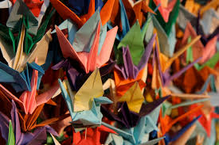

Culture & Traditions
Tea Ceremony

The Japanese tea ceremony, or "Chanoyu," is a timeless tradition that embodies the art of tea preparation and appreciation. Rooted in Zen Buddhism, this ritual emphasizes harmony, respect, purity, and tranquility. Guests are invited to savor matcha, a powdered green tea, in a serene and meticulously arranged setting.
Sumo Wrestling

Sumo wrestling is Japan's national sport, steeped in ancient rituals and traditions. Two wrestlers, or "rikishi," face off in a circular ring, with the goal of forcing their opponent out of the ring or onto the ground. Sumo tournaments, held throughout the year, attract enthusiastic crowds who cheer for their favorite wrestlers.
Kabuki Theatre

Kabuki is a classical Japanese dance-drama known for its elaborate costumes, dramatic makeup, and stylized performances. Originating in the early 17th century, Kabuki theatre features a blend of music, dance, and acting to tell stories ranging from historical events to supernatural tales. The dynamic and expressive performances captivate audiences, showcasing Japan's rich theatrical heritage.
Cherry Blossom Festivals

Cherry blossom festivals, or "Hanami," are celebrated across Japan during the spring season when cherry trees bloom in vibrant shades of pink. Families and friends gather under the blooming trees for picnics, enjoying the fleeting beauty of the blossoms. Hanami symbolizes renewal and the transient nature of life, a cherished aspect of Japanese culture.
Origami
Origami, the art of paper folding, is a beloved Japanese tradition that transforms simple sheets of paper into intricate shapes and figures. From cranes and flowers to animals and geometric designs, origami creations reflect creativity, patience, and precision. This practice is both a recreational activity and a form of artistic expression in Japan.